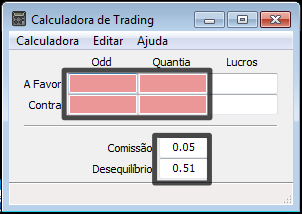
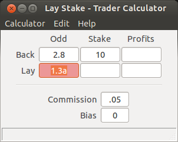
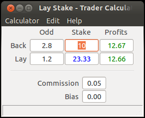
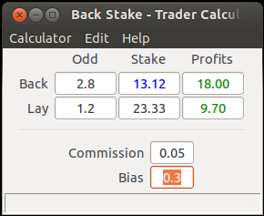

Como Utilizar a Calculadora¶
A calculadora tem um total de seis caixas de texto editáveis, onde quatro podem ser utilizadas para introduzir valores (odds e quantias) e outras duas para inserir parâmetros (comissão e desequilíbrio).
A configuração do teclado implementada (ver Navegação e Limpar Caixas de Texto), permite ao utilizador uma inserção eficiente de valores com um teclado para desktop ao posicionar as suas duas mãos da seguinte forma: a mão esquerda pode ser colocada no lado esquerdo do teclado com dedo indicador na tecla TAB e o polegar alternando entre as teclas ESPAÇO e SHIFT; a mão direita pode ser utilizada para premir o teclado numérico e setas.
Navegação¶
A navegação entre caixas de texto é realizada com as teclas TAB e ENTER. A tecla SHIFT, quando premida em conjunto com as anteriores, inverte o sentido de navegação.
A ordem das caixas de texto foi definida com base na seguinte suposição: quando um trader está a observar o mercado, este está concentrado em primeiro lugar nas odds e em seguida nas quantias.

De forma a navegar na direcção contrária basta premir a tecla SHIFT em conjunto com uma das teclas TAB ou ENTER.
Inserir Valores¶
Os valores podem ser representados como floats “pythonicos” [1], isto é, estes serão analisados pela função float [2], built-in da linguagem de programação Python:
- ”.03”
- “2.4”
- “-2”
Se existir algum erro em algum dos valores introduzidos, a calculadora é robusta o suficiente e irá alterar a cor de fundo para vermelho, além de cancelar a apresentação de resultados.
A introdução de valores pode ser ainda mais optimizada ao serem utilizadas as setas CIMA e BAIXO para adicionar/subtrair 0.01 ao valor actual da caixa de texto.
| [1] | http://python.org |
| [2] | http://docs.python.org/2/library/functions.html#float |
Limpar Caixas de Texto¶
Em caso de erro, ou outra qualquer razão, o valor na caixa de texto focada pode ser corrigido com a utilização das teclas BACKSPACE e setas ESQUERDA e DIREITA ou então com a tecla ESPAÇO de forma a apagar tudo o que estiver na caixa de texto.
Na maior parte dos casos, a última abordagem é preferida já que o utilizador faz uso das duas mãos: a mão esquerda encontra-se a premir ESPAÇO e a mão direita encontrar-se-à no teclado numérico para introduzir o novo valor.
Em caso de holocausto, ou simplesmente porque o contexto mudo, o utilizador pode sempre depender no atalho CTRL+K para voltar ao inicio limpando todas as caixas de texto.
Obter Resultados¶
A aplicação tenta calcular automaticamente os resultados necessários de cada vez que um caractere é introduzido numa das caixas de texto editáveis.
É importante notar que uma vez preenchidos três caixas de texto, o utilizador está a indicar implicitamente que quer achar o valor da quarta caixa de texto. Isto significa que esta última caixa é a variável desconhecida e que não poderá voltar a ser editada pelo utilizador.
De forma a alterar a variável desconhecida

Introduzir Desiquilibrio¶
O valor para o desequilíbrio pode ser estabelecido no intervalo [-1,1].
